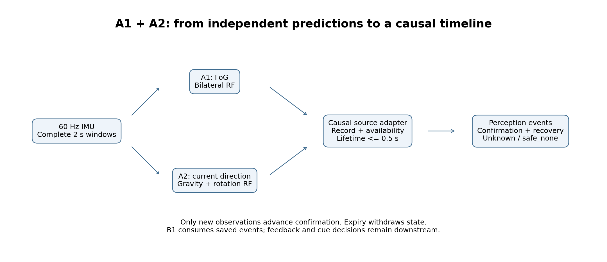
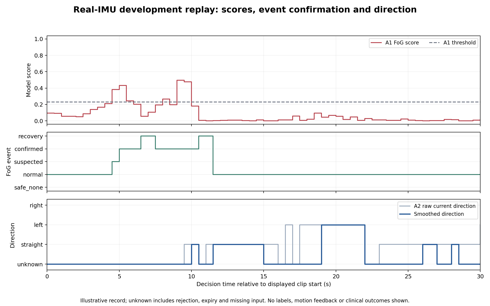

Independent FoG and current-direction models feed a causal event timeline. These figures show the implementation and one real-IMU development replay. They do not measure independent test accuracy or clinical recovery.


Derived figure data · Figure provenance